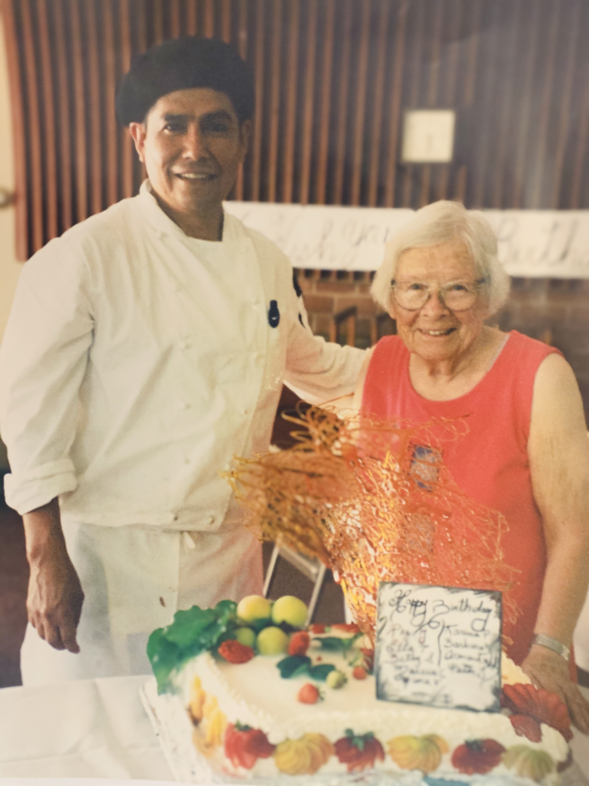
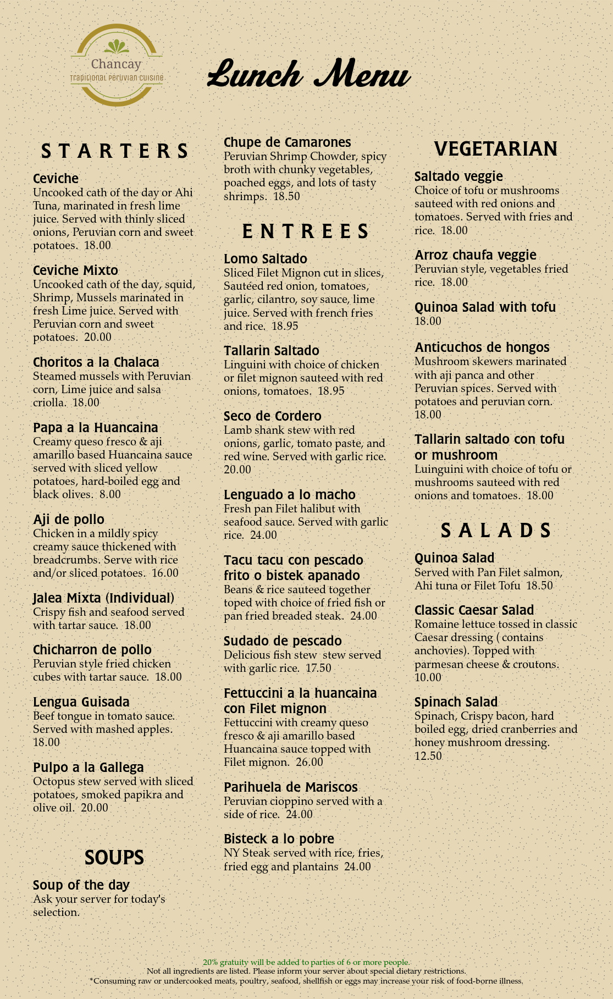
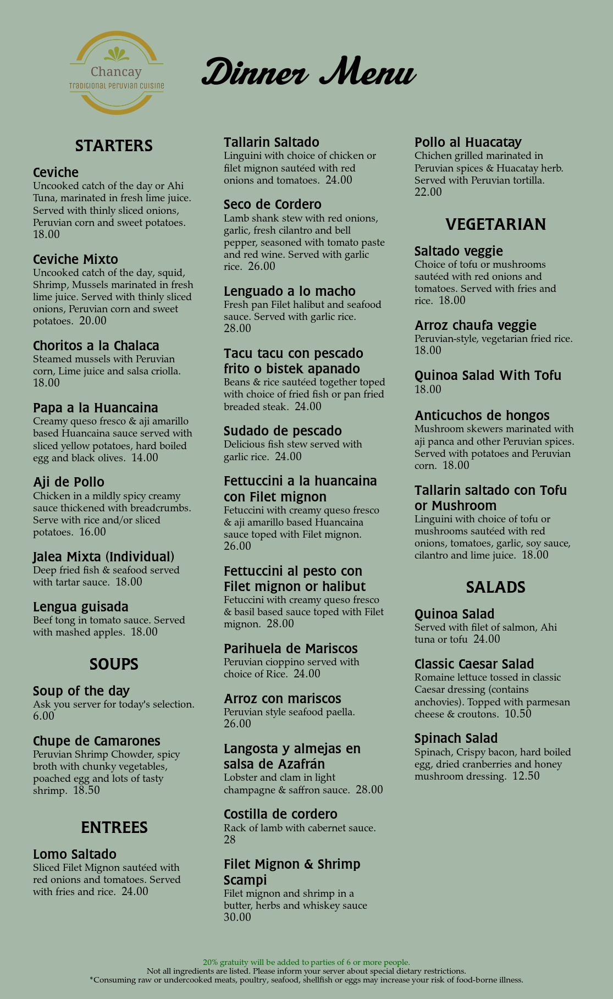
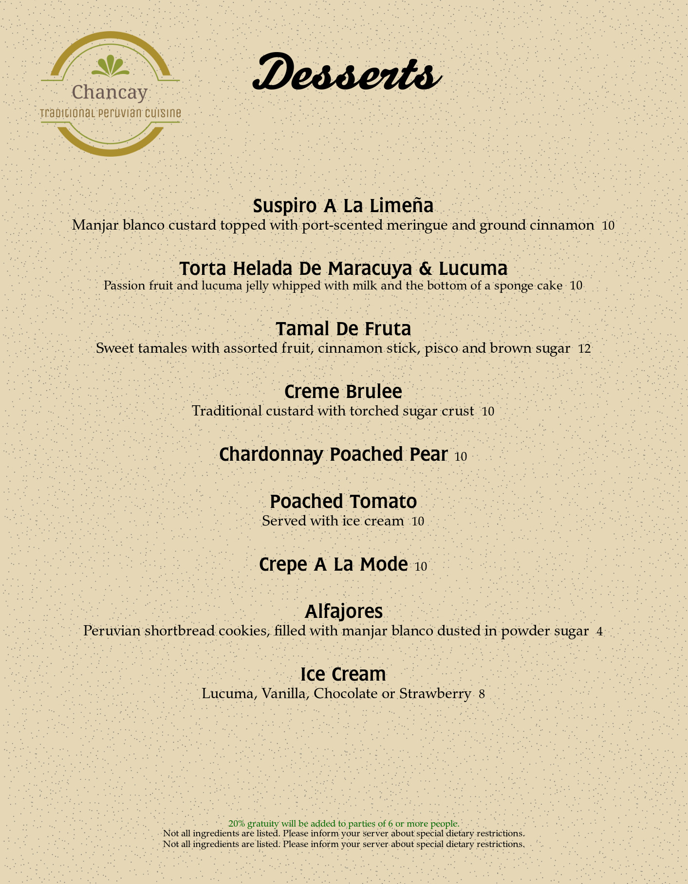

 My mother was a very caring and warming person who not only cooked meals for our family but also our friends, neighbors and anyone else who stopped by her home – she welcomed everyone and treated
them with charisma and warmth. As a child my mother taught me how to be creative with every homemade meal she cooked. With patience and motivation, she taught me how to cook amazing meals using very inexpensive ingredients. My love
for cooking began to develop as time went by and I was surrounded by a woman who not only incorporated delicious and savory ingredients into her recipes but also added in all her passion and lots of love.
Today, I continue
counting my blessings and being grateful for the unique privilege of being born into Hispanic-American and Italian roots and having the opportunity to learn cooking skills in the world renowned Le Cordon Bleu in Paris, France. I am
also thankful for the enlightening experiences that traveling and living in different parts of the world has gifted me with. These countries – Peru, France, Switzerland, Italy, Germany, Japan, and the United States – granted me with
rich culinary experiences that propelled me towards a career in cooking. Over the last few years, I have had the opportunity to work in a variety of areas including: French cuisine at Brio Restaurant, Italian cuisine at Spiedo Restaurant,
Mediterranean cuisine at Oberon Restaurant, Japanese delights at Mercury Restaurant, American Continental cuisine at Lake Merced Golf and Country Club, and French desserts at Arthur Park Restaurant. In addition to my diverse experience,
I obtained an extensive training in Japan – Tokyo, Tokirawaand Ikebukuro – learning and practicing Japanese cuisine and the Ikebana art.
As a professional chef, I have extensive training in food handling, health and nutrition.
I have experience preparing food for people with specific dietary needs relating to high blood pressure, weight loss, and lowering cholesterol. That being said, I am excited to present to you my newest creations here at Chancay Traditional
Peruvian Cuisine restaurant.
Welcome to Chef Sebastiani website!




Location
Upcoming Events
🏠 833 Mahler Rd #10,
Burlingame, CA 94010
✉ office@chancayrestaurant.com
✉ reservation@chancayrestaurant.com
Monday - Closed
Tuesday - 11:00AM-9:00PM
Wednesday - 11:00AM-9:00PM
Thursday - 11:00AM-9:00PM
Friday - 11:00AM-9:00PM
Saturday - 9:00AM-9:00PM
Sunday - 9:00AM-3:00PM